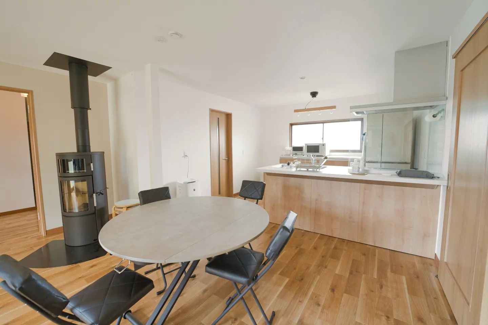
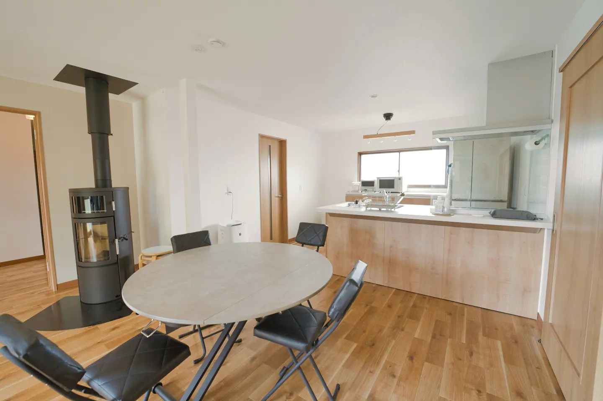
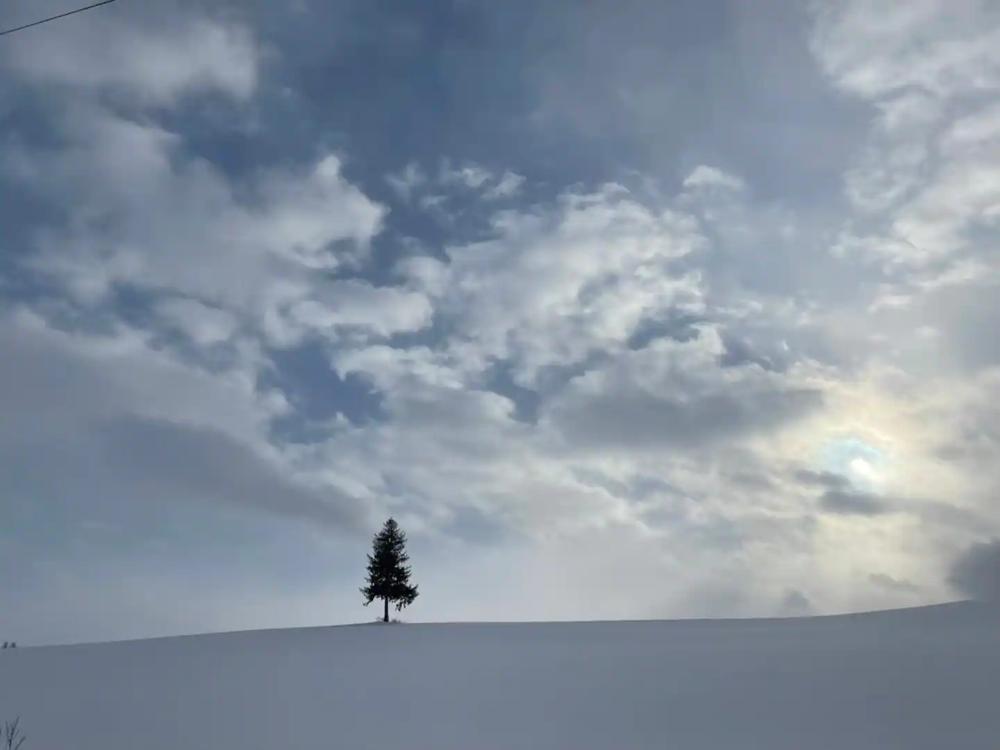
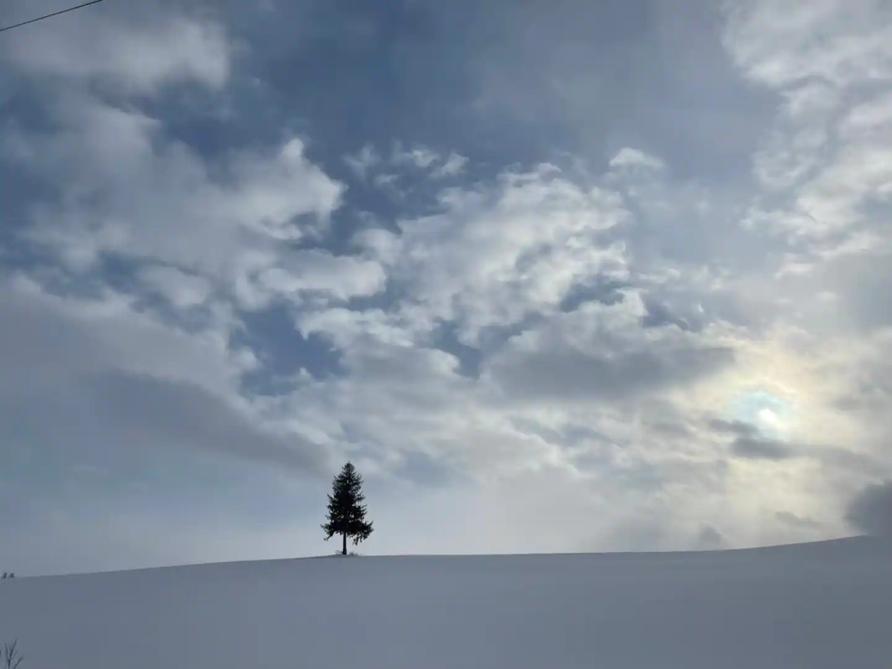
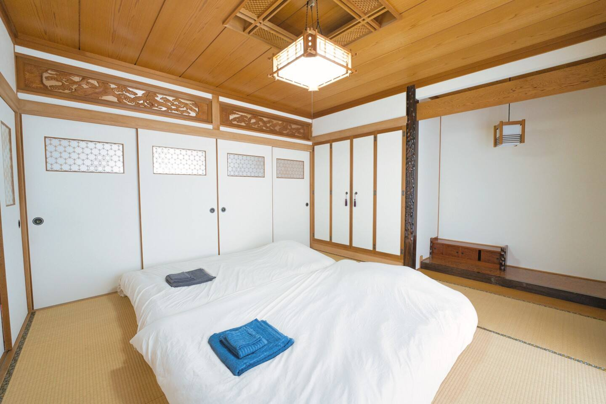
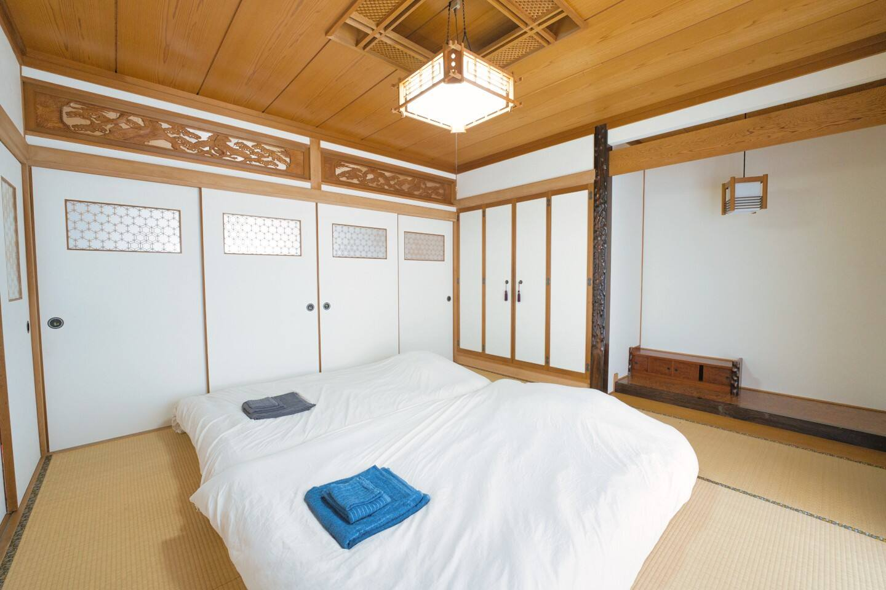
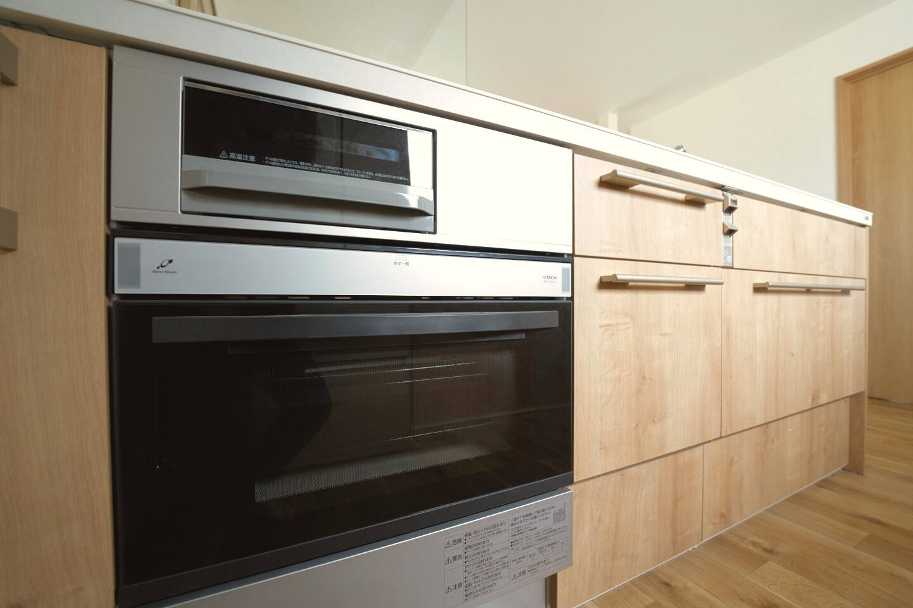
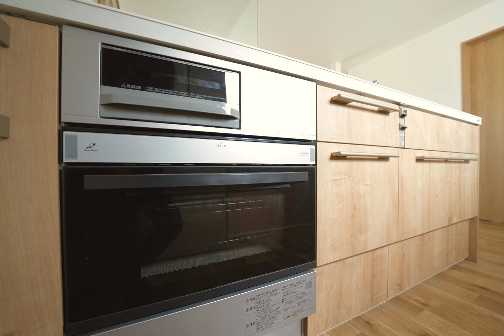

Maple Farm
Welcome to Maple Farm.
We hope that you will discover lots of useful information here about Maple Farm and the surrounding area. Maple Farm is perfectly located just 5 minutes drive from Asahikawa Airport, making it an ideal base for exploring the famous Blue Pond, Patchwork Road, and the beautiful flower fields of Biei. The property offers easy access to all major attractions while providing a peaceful countryside setting. Check availability using the calendar below. We recommend booking early, especially during peak lavender season (mid-July to mid-August) and winter illumination and ski season (November to April). Book directly through our reservation system for the best rates and instant confirmation. You'll be redirected to our secure booking platform to complete your reservation. Asahikawa Ramen: Local Specialties: Blue Pond: Patchwork Road: Asahiyama Zoo: Flower Fields: Best Seasons: Cultural Sites: Weather: From Asahikawa Airport: Getting Around: Key Distances By Car: Kamui Ski Links (40 minutes): Asahidake (45 minutes): Kurodake (1 hour): Canmore Ski Village (Higashikawa) (20 minutes): Furano Ski Resort (1 hour 15 minutes): Maple Farm offers comfortable accommodation in the heart of Hokkaido's most scenic region. Located just minutes from Asahikawa Airport and Biei's famous attractions, our property provides the perfect blend of convenience and tranquility. Whether you're here for the summer flower fields, winter illuminations, or year-round cultural experiences, Maple Farm serves as your ideal base for exploring all that this beautiful region has to offer.


 
 

 
 


 
 


 
 


Location and Map
Reservations
Direct Booking
Food & Drink
Try the famous shoyu-based ramen with its signature thin layer of oil. Visit Asahikawa Ramen Village with 8 renowned shops including Aoba, Tenkin, and Santoka.
Experience Jingisukan (grilled lamb on convex metal grills), Hokkaido soup curry, and fresh local seafood and vegetables. The region is renowned for its high-quality agricultural products.Attractions
The world-famous cobalt-blue pond is just 15 minutes drive away. Features winter illuminations from December to February
Scenic route featuring the iconic Ken & Mary Tree, Seven Stars Tree, and colorful agricultural fields creating a beautiful patchwork landscape.
Famous for daily penguin walks during the Winter, interactive seal tanks, and up-close animal encounters, the zoo is only 20 minutes drive away.
Peak lavender season is from mid-July to mid-August. Shikisai Hill is only 20 minutes drive and has walking trails and tractor-pulled wagon rides.Useful Info
Summer (July-August) for flower fields and mild weather. Winter (December-February) for skiiing, the Blue Pond illuminations and Asahikawa Winter Festival.
Asahikawa City Museum showcasing Ainu culture, Otokoyama Sake Brewery for tastings, and traditional Hokkaido handicraft shops.
Summer temperatures 15-35°C (59-95°F). Winter temperatures -15-10°C (5-50°F) with many days of powder snow and blue skies.Transport
Taxi (5 minutes; <¥1,500) or rental cars available at the airport.
Car rental recommended for maximum flexibility accessing remote attractions. Bicycle rentals available: 200 yen/hour regular, 600 yen/hour electric bikes.
Blue Pond (15 min), Asahiyama Zoo (20 min), Furano (1h), Shikisai Hill (20 min).Ski Resorts
The closest ski resort to Maple Farm, featuring 25 courses across beginner to advanced levels. Known for excellent powder snow and night skiing until 9pm. Lift tickets: 4,500 yen/day adults.
Japan's longest ski season (November to May) on Hokkaido's highest peak. Famous for deep powder, backcountry skiing, and stunning mountain views. Advanced terrain recommended for experienced skiers.
Part of Daisetsuzan National Park with spectacular alpine scenery. Offers both groomed runs and off-piste opportunities. Connected to Asahidake via ropeway system for mountain exploration.
A smaller, family-friendly ski area perfect for beginners and intermediate skiers. Affordable lift tickets and relaxed atmosphere. Great for families with children learning to ski.
Famous resort that hosted FIS World Cup races. Two ski areas (Kitanomine and Furano zones) with varied terrain. Known for excellent snow quality and beautiful views of the Tokachi mountain range.About Maple Farm